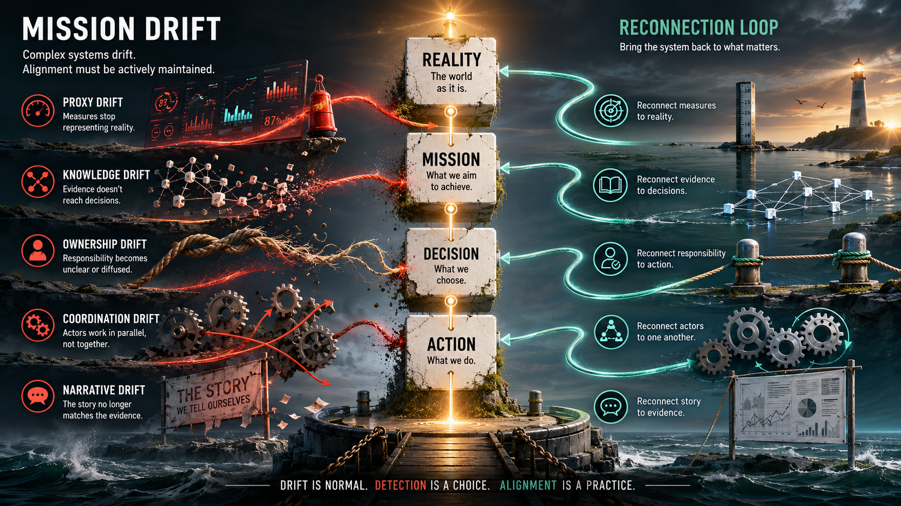

I did not arrive here from theory first.
I arrived here from repeated failure patterns in real work:
- reports optimized instead of outcomes,
- outputs delivered instead of adoption,
- activity confused with progress,
- meetings substituting for decisions,
- compliance replacing responsibility.
Later I found established language around the same mechanism: Goodhart's Law, Campbell's Law, metric fixation, goal displacement, proxy failure. Useful references, but not the center of this doctrine.
The center is mission drift.
Mission Drift Is the Umbrella
The current B1C3 framing is:
Mission Drift
|
|- Proxy Drift
|- Knowledge Drift
|- Ownership Drift
|- Coordination Drift
|- Narrative DriftThis matters because it changes the scope.
If we call everything proxy capture, we flatten the system. If we model mission drift as an umbrella, we can inspect multiple mechanisms without pretending they are the same failure.
Why "Drift" Beats "Capture"
"Capture" sounds like an event with villains. "Drift" describes dynamics in complex systems.
Systems move unless actively corrected.
That means drift can happen even when:
- nobody is lying,
- nobody is malicious,
- nobody is obviously incompetent.
Teams change. Funding changes. Software changes. Reporting changes. Institutional memory decays. Mission alignment moves unless someone deliberately reconnects it.
This is engineering language, not moral language.
Proxies Are Not the Enemy
A proxy is unavoidable.
You cannot directly measure "mission success" in one perfect variable. So you use layers:
Mission -> Proxy -> Measurement -> Dataset -> Dashboard -> Decision.
Example:
Healthy Baltic Sea -> nutrient concentration -> sampling instrument -> dataset -> dashboard status -> funding priorities.
Nothing is wrong with this chain by default. The danger starts when the chain is treated as reality itself.
Four Failure Modes Inside Proxy Drift
Proxy drift is not one thing.
- Proxy drift from reality: The indicator no longer predicts what matters.
- Measurement drift: The proxy is conceptually fine, but collection becomes inconsistent (definitions, sensors, methods, organizations).
- Optimization drift: People optimize the number instead of the goal. Classic Goodhart dynamics.
- Interpretation drift: The dashboard state is treated as reality, instead of "the indicator currently looks healthy."
These are different failure modes and need different interventions.
The Five Drift Questions
Each drift type maps to a diagnostic question:
- Mission Drift: Are we still solving the original problem?
- Proxy Drift: Do our measures still represent reality?
- Knowledge Drift: Can evidence reach decisions?
- Ownership Drift: Is responsibility attached to action?
- Coordination Drift: Can actors work together effectively?
- Narrative Drift: Does the story still fit the evidence?
This is the point: not labels, but inspectable questions.
Why "Nothing Is Sacred" Keeps Surviving
If a proxy becomes sacred, correction dies.
The KPI becomes sacred. The process becomes sacred. The method becomes sacred. The funding logic becomes sacred.
Then nobody can ask whether it still points at the mission.
In that sense, "Nothing Is Sacred" is not anti-principle. It is anti-drift discipline. Everything stays inspectable.
Baltic Sea Work as a Drift Test
This is why Baltic work keeps circling the same operational questions:
- Was output actually used?
- Who carried evidence from producer to decision-maker?
- What happened after project closure?
A project can score high on reports, dissemination, milestones, and KPI delivery while generating near-zero lasting change.
That is mission drift with clean paperwork.
Intervention Logic
Each drift implies a reconnection move:
- Mission Drift -> reconnect to purpose.
- Proxy Drift -> reconnect measures to reality.
- Knowledge Drift -> reconnect evidence to decisions.
- Ownership Drift -> reconnect responsibility to action.
- Coordination Drift -> reconnect actors to one another.
- Narrative Drift -> reconnect stories to evidence.
This is the operational doctrine: diagnose where alignment broke, then execute the smallest action that reconnects reality to decisions.
Close
Proxy drift is not the doctrine. Mission drift is.
Proxy drift is one of the most common ways mission drift becomes normalized.
So the work is not to abolish proxies. The work is to keep them inspectable, revisable, and subordinate to reality.